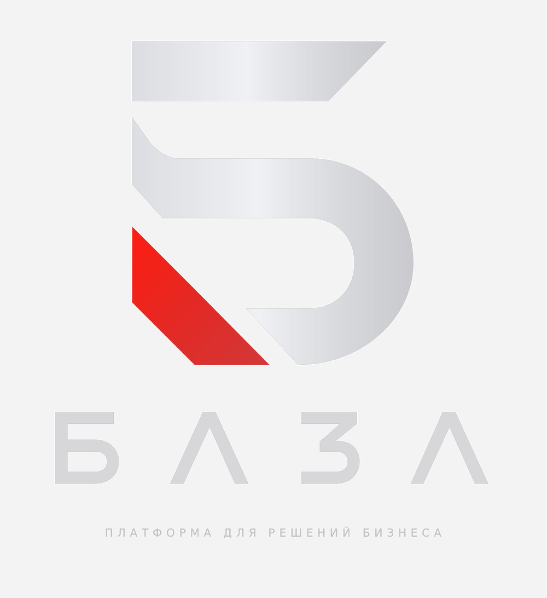

Раздел 01
Здесь начинается остальная страница.
Hero завершён — дальше идёт обычный контент сайта. Этот блок временный, он лишь показывает плавную передачу управления следующей секции.

Раздел 01
Hero завершён — дальше идёт обычный контент сайта. Этот блок временный, он лишь показывает плавную передачу управления следующей секции.